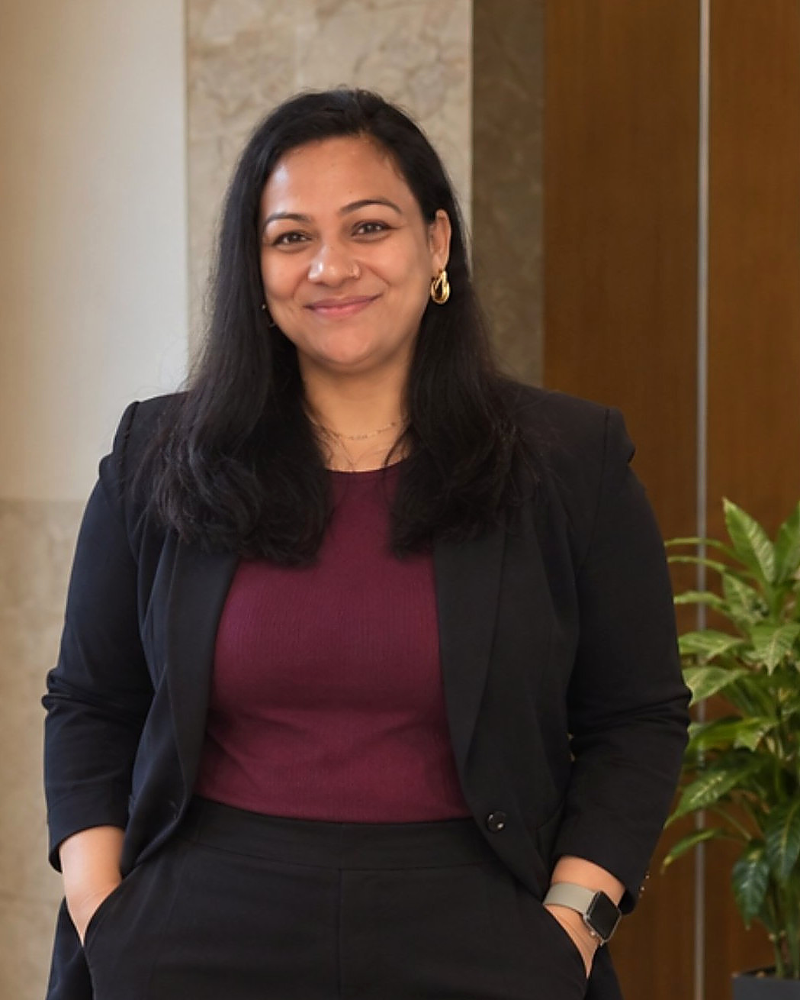

Hyderabad, India
Shradha Samant
Operations leader. Process improvement. AI-enabled productivity.
I lead service delivery teams and fix the processes behind them. 11+ years across Accenture, Concentrix and HCL Technologies, with a practical habit of using AI to take repetitive work off a team's plate.
Open to Operations Manager roles · Hyderabad or remote

About
I am an operations and people leader who owns the numbers that matter in service delivery: Quality, SLA, AHT, Utilization, Occupancy and Throughput. I coach the team, read the trends, find the gap and fix the cause, not just the symptom.
I combine that with Lean Six Sigma and project management training, and with hands-on use of generative AI and automation for research, reporting, presentations, Excel and data work, and recurring operational tasks.
Projects worked with
- AT&T
- Virgin Media
- Macy's
- Meta
What I do
Operations leadership
Team management, performance governance, coaching and stakeholder management for day-to-day service delivery.
Process improvement
Root-cause analysis, continuous improvement and workflow redesign using Lean Six Sigma practices.
AI-enabled productivity
Using GenAI for research, content, presentations, Excel and data support, and everyday problem-solving.
People and performance
Hiring, onboarding, mentoring, performance reviews, capability development and succession planning.
Experience
-
Mar 2021 – Present
Team Leader
Accenture Solutions Pvt. Ltd.
- Lead a team of 24 associates, driving service delivery and performance across Quality, SLA, AHT, Utilization, Occupancy and Throughput.
- Use performance trends, operational reviews and structured problem-solving to find gaps, define corrective actions and improve execution.
- Partner with stakeholders on operational priorities, hiring, coaching, performance reviews, capability development and succession planning.
- Built an AI-enabled Metamate workflow for weekly training reminders, cutting repetitive manual follow-ups and improving consistency and compliance.
- Spot repetitive operational activities and assess them for automation, AI-enabled productivity and workflow redesign.
- Support operational reporting, documentation, knowledge sharing and process improvement.
- Pull SLA reports every week for my team and for other leads.
- Support onboarding of new joiners, working closely with HR through every step: orientation, laptop orders and setup, query support and MyTE approvals, plus coordinating manager connects.
- Own the laptop returns process for the Hyderabad and Bangalore sites, with an AI-automated tracking sheet.
- Plan, present and host town halls, coordinating with other teams so they run smoothly.
- Diversity point of contact, supporting my managers.
-
Jul 2016 – Mar 2021
Senior Agent, Subject Matter Expert, Team Leader
Concentrix · Virgin Media and Macy's projects
- Progressed from Senior Agent to Subject Matter Expert to Team Leader.
- Led teams of 20–25 associates, responsible for operational performance, coaching, quality and continuous improvement.
- Conducted 40+ interviews and supported hiring, onboarding, ramp-up and capability development.
- Supported new-team ramp-ups and operational excellence initiatives.
- Led people engagement for almost 200 people, working closely with HR.
-
Oct 2014 – Dec 2015
Junior Engineer, Product Support Engineer
HCL Technologies
- Worked in ISP support, building a foundation in technology-enabled customer and product support.
- Supported new joiners from about 8 to 9 months into the role.
Trusted by managers
Alongside my core role, I take on the work that keeps a team running smoothly. Managers hand it to me because I follow through.
Accenture
Onboarding new joiners
I work closely with the HR team and stay in touch with new joiners through every step of onboarding. I also coordinate with managers so their first weeks go smoothly.
Accenture
Town halls
I handled the presentation, hosting and coordination with other teams so each town hall ran smoothly.
Accenture
Diversity point of contact
I supported my managers as the diversity point of contact.
Accenture
Weekly SLA reports
I pulled SLA reports every week, for my own team and for other leads.
Accenture
Laptop returns, two sites
I ran the laptop returns process for Hyderabad and Bangalore, keeping a shared sheet current by working with each site's leads.
Concentrix
Engagement for almost 200 people
I took care of people engagement, working closely with HR.
HCL Technologies
Supporting new joiners
About 8 to 9 months into the role, I started supporting new people as they joined.
Case study
Weekly training reminders, automated
A small piece of AI-enabled workflow design from my current team, built to take a repeating chore off everyone's plate.
-
Problem
Weekly training reminders relied on repeated manual follow-ups. They took time every week and were hard to keep consistent.
-
What I built
An AI-enabled Metamate workflow that sends the weekly training reminders automatically.
-
Result
Far fewer repetitive follow-ups, with more consistent reminders and better compliance.
Laptop returns across two sites, automated
A second workflow, built after I took ownership of the laptop returns process for Hyderabad and Bangalore.
-
Problem
Returns ran on a shared sheet that I kept current by chasing each site's leads one by one.
-
What I built
A Metamate workflow that gathers every entry into one database, spots what is missing, and sends reminder emails and chat messages through AI.
-
Result
One up-to-date record across both sites, with the chasing handled by the workflow.
Results
- Up to 25Led teams of up to 25 people, currently 24 at Accenture, while owning Quality, SLA, AHT, Billable Hours, Utilization, Occupancy and Throughput.
- 90%+Consistent quality accuracy, achieved through coaching, performance management and structured reviews.
- AutomatedWeekly training reminders built in Metamate, removing repetitive follow-ups and improving compliance.
- 40+Interviews conducted, plus onboarding, mentoring and capability development of new hires.
- Many awardsRecognised repeatedly across my career. A few: Best Team Lead, Inspiration Leader Encore, Best Employee and Best Team.
Metrics
The numbers I own as a team leader. Tap one to see what it measures and how I work with it.
What it measures
Quality
How accurately the team's work meets the agreed standard.
How I work with it
Coaching, structured reviews and performance management. This is how I have held quality accuracy at 90% and above.
Skills
Operations
Support channels
Artificial intelligence
Education
- B.Tech, Dehradun Institute of Technology
- Lean Six Sigma Green BeltCertification
- Post Graduate Program in Project Management, Simplilearn
- Be10x AI Course: generative AI, AI tools, prompt engineeringIn progress
Contact
Hiring for operations or service delivery? Let's talk.
Resume available on request. Write to me at this address.
theshradhaaeir@gmail.com